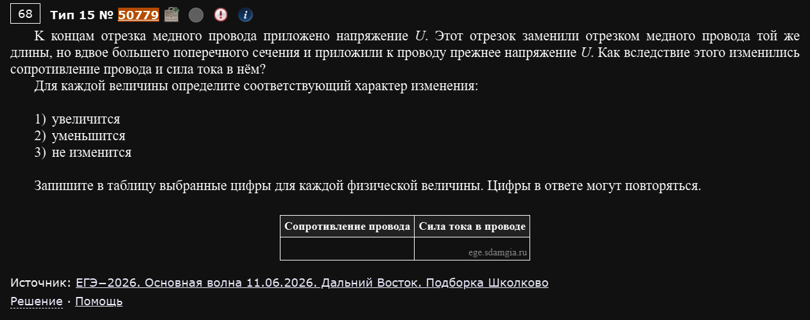
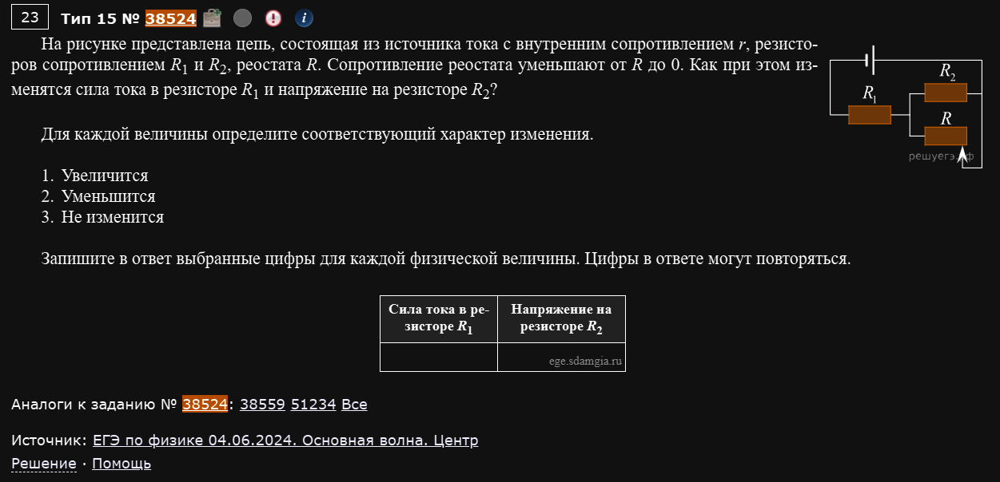
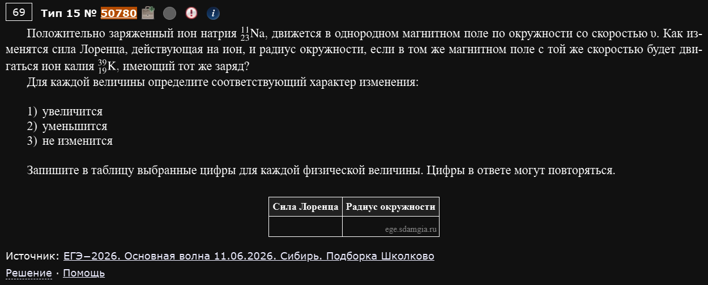
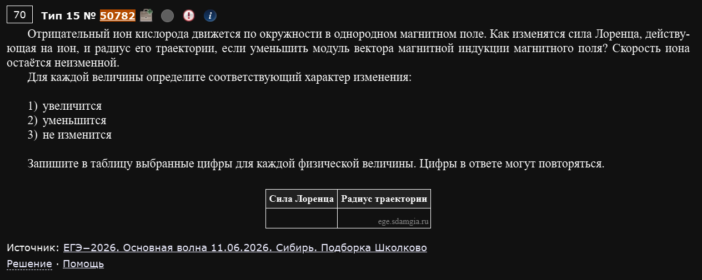
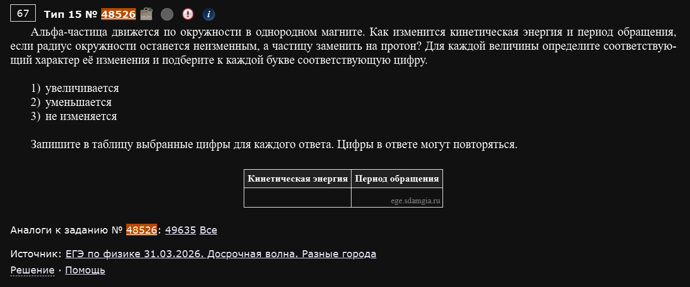
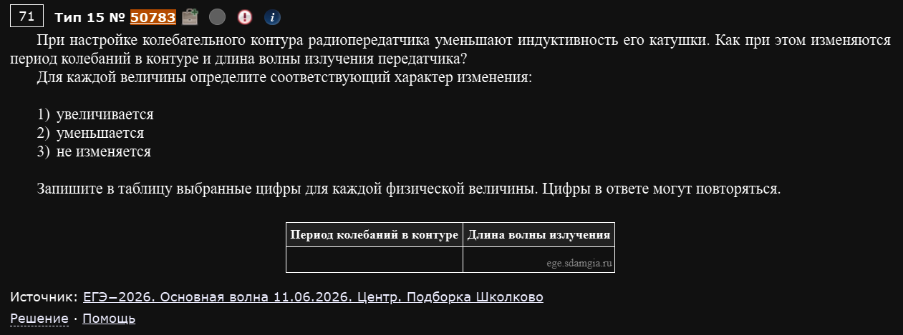
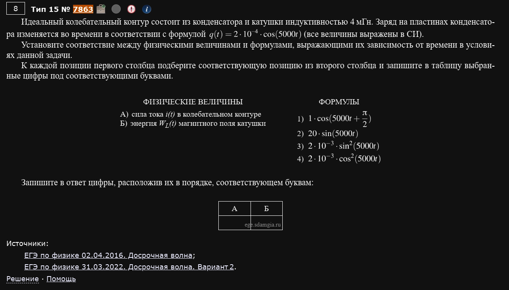
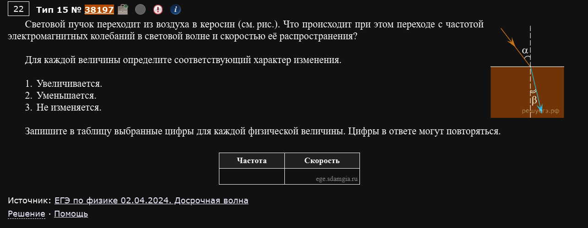
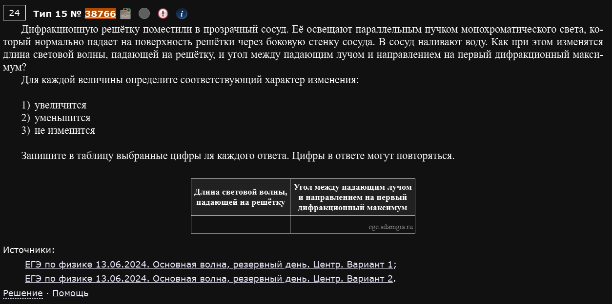

№15 Завершающее задание 2, Электродинамика
Разнообразие
Поскольку завершающие задания невероятно разнообразные по ситуациям и темам, которые в них задействованы - здесь разбираются только те задачи, благодаря которым у вас сформируется понимание про что вообще этот номер.
Разборы
№15. Электродинамика. Изменение физических величин и установление соответствия
Тот же формат, что и в номерах 6 и 10: либо “как изменится величина” (увеличится/уменьшится/не изменится для двух величин сразу), либо “установите соответствие” между величинами и формулами/графиками. Материал здесь самый широкий из всех номеров — сюда попадает и электричество с магнетизмом, и колебательный контур, и оптика с волнами. Разбираю по подтемам.
Электрические цепи
Пример 1) (Решу ЕГЭ №50779 — ЕГЭ-2026, основная волна 11.06.2026, Дальний Восток, подборка Школково)

К концам отрезка медного провода приложено напряжение U. Этот отрезок заменили отрезком медного провода той же длины, но вдвое большего поперечного сечения, и приложили к проводу прежнее напряжение U. Как вследствие этого изменились сопротивление провода и сила тока в нём?
Сопротивление провода: . Материал и длина те же, меняется только площадь сечения S — она входит в знаменатель, значит при увеличении S сопротивление уменьшается:
Напряжение осталось прежним (U не меняется по условию), поэтому по закону Ома для участка цепи сила тока меняется обратно сопротивлению:
Ответ: 21 (сопротивление уменьшится, сила тока увеличится).
Пример 2) (Решу ЕГЭ №38524 — ЕГЭ по физике 04.06.2024, основная волна, Центр)

На рисунке представлена цепь, состоящая из источника тока с внутренним сопротивлением r, резисторов сопротивлением R1 и R2, реостата R. Сопротивление реостата уменьшают от R до 0. Как при этом изменятся сила тока в резисторе R1 и напряжение на резисторе R2?
По схеме R2 и реостат включены параллельно друг другу, а эта пара — последовательно с R1 и источником. Здесь работает та же идея, что и в задачах про трение или про лампочки в параллельных ветвях: если сопротивление одной из параллельных ветвей уменьшается, ток “утекает” в неё, а через соседнюю (постоянную) ветвь течёт всё меньше тока.
Сопротивление параллельного участка (R2 ∥ реостат): уменьшается вместе с реостатом (вплоть до нуля, когда реостат полностью закорачивает R1).
Общее сопротивление цепи поэтому тоже уменьшается общий ток от источника растёт => на R1 он тоже растет
Напряжение на R2: поскольку сопротивление реостата уменьшают до 0, то ток перестанет течь через параллельный участок с R2 и R => напряжение будет равно 0 => уменьшается.
Ответ: 12
Движение заряда в магнитном поле
Две формулы на всё
Всё это семейство задач стоит на двух формулах: сила Лоренца и радиус окружности (получается из равенства силы Лоренца и центростремительной силы ). Из них же следует период обращения (не зависит от скорости!) и кинетическая энергия .
Пример 1) (Решу ЕГЭ №50780 — ЕГЭ-2026, основная волна 11.06.2026, Сибирь, подборка Школково)

Положительно заряженный ион натрия движется в однородном магнитном поле по окружности со скоростью υ. Как изменятся сила Лоренца, действующая на ион, и радиус окружности, если в том же магнитном поле с той же скоростью будет двигаться ион калия, имеющий тот же заряд?
Заменили ион, но заряд q, скорость υ и поле B остались теми же — меняется только масса (ион калия тяжелее иона натрия).
Сила Лоренца — в эту формулу масса вообще не входит, а q, v, B не изменились. Сила Лоренца не изменится.
Радиус — здесь масса в числителе. У калия масса больше радиус увеличится.
Ответ: 31 (сила Лоренца не изменится, радиус увеличится).
Сила Лоренца "не замечает" массу частицы
Частая ошибка — считать, что более тяжёлая частица испытывает бóльшую силу. Сила Лоренца зависит только от заряда, скорости и поля; масса появляется только там, где сила используется для расчёта ускорения, радиуса или периода (через второй закон Ньютона).
Пример 2) (Решу ЕГЭ №50782 — ЕГЭ-2026, основная волна 11.06.2026, Сибирь, подборка Школково)

Отрицательный ион кислорода движется по окружности в однородном магнитном поле. Как изменятся сила Лоренца, действующая на ион, и радиус его траектории, если уменьшить модуль вектора магнитной индукции магнитного поля? Скорость иона остаётся неизменной.
Теперь меняется само поле B, а заряд, масса и скорость иона — нет.
Сила Лоренца — B стоит в прямой пропорции, при уменьшении B сила уменьшится.
Радиус — B в знаменателе, при уменьшении B радиус увеличится.
Ответ: 21 (сила Лоренца уменьшится, радиус увеличится).
Сила и радиус всегда меняются в противоположные стороны при изменении одного B
Если варьируется только индукция поля (при постоянных m, q, v), сила Лоренца и радиус всегда идут в противофазе: одно растёт, другое падает. Это стоит держать в голове как проверку — если у вас получилось, что обе величины изменились в одну сторону, а варьировалось только B, стоит перепроверить расчёт.
Пример 3) (Решу ЕГЭ №48526 — ЕГЭ по физике 31.03.2026, досрочная волна, разные города)

Альфа-частица движется по окружности в однородном магните. Как изменится кинетическая энергия и период обращения, если радиус окружности останется неизменным, а частицу заменить на протон?
Здесь неизменным остаётся сам радиус — а значит, скорость при замене частицы должна была измениться, чтобы это условие выполнилось. У протона масса (одна атомная единица) и заряд ; у альфа-частицы и .
Период (не зависит от радиуса и скорости!):
Период протона вдвое меньше — период уменьшится.
Кинетическая энергия удобнее всего через (B и r по условию одинаковы для обеих частиц — оба сокращаются):
Энергии оказались равны — кинетическая энергия не изменится.
Ответ: 32 (кинетическая энергия не изменится, период уменьшится).
Неожиданное совпадение — не ошибка
То, что кинетическая энергия протона и альфа-частицы совпала, не случайность конкретных чисел, а следствие того, что для альфа-частицы отношение заряда к массе ровно в два раза меньше, чем у протона ( у альфы вдвое меньше) — а энергия при фиксированном радиусе зависит именно от . Не спешите считать “красивый” ответ вроде “не изменится” ошибкой в собственных вычислениях — иногда это и есть правильный ответ.
Колебательный контур
Пример 1) (Решу ЕГЭ №50783 — ЕГЭ-2026, основная волна 11.06.2026, Центр, подборка Школково)

При настройке колебательного контура радиопередатчика уменьшают индуктивность его катушки. Как при этом изменяются период колебаний в контуре и длина волны излучения передатчика?
Индуктивность уменьшили период уменьшится.
Длина волны излучения связана с периодом через скорость света: — то есть длина волны всегда меняется в ту же сторону, что и период (пропорционально ему).
Ответ: 22 (и период, и длина волны уменьшатся).
Длина волны излучения — это просто "T, пересчитанный в метры"
— константа c одна и та же для любого контура, поэтому в задачах “период / длина волны” эти две величины ведут себя всегда одинаково: если период растёт — длина волны растёт, если падает — падает. Отдельно считать λ не нужно, достаточно определить, как меняется T.
Пример 2) (Решу ЕГЭ №7863 — ЕГЭ по физике 02.04.2016, досрочная волна; ЕГЭ по физике 31.03.2022, досрочная волна, вариант 2)

Идеальный колебательный контур состоит из конденсатора и катушки индуктивностью 4 мГн. Заряд на пластинах конденсатора изменяется во времени в соответствии с формулой (все величины выражены в СИ). Установите соответствие между физическими величинами и формулами, выражающими их зависимость от времени в условиях данной задачи. А) сила тока i(t) в колебательном контуре Б) энергия магнитного поля катушки
Формулы: 1) ; 2) ; 3) ; 4) (ещё один отвлекающий вариант)
Здесь не нужно ничего “подбирать на глаз” — обе формулы выводятся напрямую по определению.
А) Сила тока — это производная заряда по времени:
А — это тригонометрическое тождество, а не совпадение. Значит, — это вариант 1.
Б) Энергия магнитного поля катушки:
Это вариант 3 — совпадает буквально до последней цифры.
Ответ: А — 1, Б — 3.
В "соответствии" с формулами дифференцируйте, а не подбирайте по виду
Соблазн — сопоставлять формулы “по похожести” (раз в условии cos, значит и производная тоже как-то похожа на cos). Гораздо надёжнее просто взять производную (для тока) или подставить в формулу энергии (используя уже найденный ток) и сравнить результат буква в букву с предложенными вариантами — тогда ошибиться почти невозможно.
Оптика и волны
Пример 1) (Решу ЕГЭ №38197 — ЕГЭ по физике 02.04.2024, досрочная волна)

Световой пучок переходит из воздуха в керосин. Что происходит при этом переходе с частотой электромагнитных колебаний в световой волне и скоростью её распространения?
Частота света определяется исключительно источником и никогда не меняется при переходе из одной среды в другую — это фундаментальный факт, а не то, что нужно вычислять.
Скорость света в среде — , а керосин оптически плотнее воздуха (), значит скорость света в керосине меньше, чем в воздухе — при переходе она уменьшается.
Ответ: 32 (частота не изменится, скорость уменьшится).
Частота — это то, что никогда не меняется при переходе через границу сред
Если в вопросе фигурирует переход света из одной среды в другую, частота почти наверняка окажется правильным ответом “не изменится” — она вообще не зависит от среды. Меняются только скорость и (как следствие, через ) длина волны.
Пример 2) (Решу ЕГЭ №38766 — ЕГЭ по физике 13.06.2024, основная волна, резервный день, Центр, варианты 1 и 2)

Дифракционную решётку поместили в прозрачный сосуд. Её освещают параллельным пучком монохроматического света, который нормально падает на поверхность решётки через боковую стенку сосуда. В сосуд наливают воду. Как при этом изменятся длина световой волны, падающей на решётку, и угол между падающим лучом и направлением на первый дифракционный максимум?
Свет идёт от источника через воздух, попадает в сосуд и доходит до решётки уже через воду — то есть непосредственно на решётку падает свет, распространяющийся в водной среде, а не в воздухе.
Длина волны, падающей на решётку: — при переходе в более плотную среду (вода, ) длина волны уменьшается по сравнению с тем, какой она была бы в воздухе.
Угол на первый максимум: формула дифракционной решётки . Период решётки d не меняется, а (та, что реально падает на решётку — то есть уже в воде) уменьшилась, значит для того же порядка m должно уменьшиться и , а с ним и сам угол — угол уменьшается.
Ответ: 22 (и длина волны, и угол уменьшатся).
Важно, в какой среде свет встречает решётку, а не в какой он был раньше
Ключевая тонкость этой задачи — свет должен пройти через воду ДО того, как встретит решётку, поэтому именно “подводная” длина волны определяет дифракционную картину. Если бы решётка стояла на пути света ДО стенки с водой (то есть свет доходил бы до неё ещё через воздух), ответ был бы совсем другим — вода бы просто не участвовала в формировании картины на решётке.